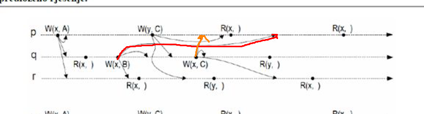

Audaces
Ne razumijem točno što želiš reć, ali mislim da se ne stavljaju pretpostavke između pojedinih pisanja i čitanja. Čitanja služe samo kao print nekakav da vidiš kako su se na kojem procesu pojavljivali podaci. Znači prvo trebaš nadopuniti ove prazna polja, znači s lokacije s koje se čita se uvijek pročita zadnji zapisani podatak u tu lokaciju (od bilokojeg procesa). Ono što tu trebaš zaključiti je slijedi li se konzistentnost redoslijeda (puno ime sa slajdova : konzistentnost redoslijeda upisivanja (FIFO con.)). Na slajdu piše :
Redoslijed izvođenja operacija pisanja provedenih od strane jednog procesa vidljiv je na jednak način svim ostalim procesima, ali redoslijed izvođenja operacija pisanja različitih procesa može biti vidljiv na proizvoljan način ostalim procesima.
Znači ako isti proces u lokaciju L zapiše podatak P1 i kasnije u istu (ili različitu) lokaciju zapiše podatak P2 to znači da svi ostali procesi uvijek moraju pročitati P1 pa P2 (ili samo jedan od njih), ali nikada P2 pa P1. A podaci ostalih procesa se na isti način moraju čitati, ali međusobno nije bitno kojim redoslijedom. Npr na prvj slici proces r čitas redoslijedom R(x,B) i R(y,C). S obzirom da su B i C upisani od strana različitih procesa, čak i da je r pročitao obrnutim redoslijedom to i dalje ne bi narušilo ovu konzistentnost.
U ovom primjeru to se pravilo krši s ove dvije strelice :

Zato što će proces p prvo pročitati C iz lokacije X a zatim B, što je obrnuto od redoslijeda kojim je proces q pisao. Znači na sljedećoj slici treba samo te dvije strelice promijenit da crvena ide prije a narančasta kasnije do procesa p i to je to.